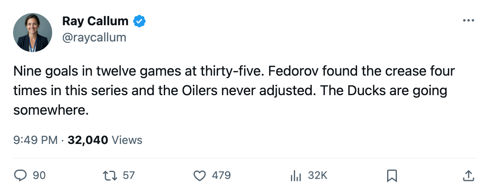

RECAP: Anaheim 4, Edmonton 3 OT — Fedorov's Ducks close it on the road in overtime
Anaheim wins Game 6 in regulation-plus at Rexall Place; Sergei Fedorov finishes with 13 points and 9 goals
 Ray CallumSenior correspondent · Home Ice Network
Ray CallumSenior correspondent · Home Ice Network
The  Mighty Ducks of Anaheim Ducks won 4-3 in overtime at Rexall Place on Wednesday, closing the series 4-2 over
Mighty Ducks of Anaheim Ducks won 4-3 in overtime at Rexall Place on Wednesday, closing the series 4-2 over  Edmonton Oilers and ending a 10-game season series that had produced more overtime than any other matchup in the league.
Edmonton Oilers and ending a 10-game season series that had produced more overtime than any other matchup in the league.
 Sergei Fedorov90 finished the spring with 9 goals and 4 assists for 13 points in 12 games. He scored in Games 1, 4, 5 and 6. At 35, on a road building that had been loud enough to produce 4 overtime games in the regular season between these clubs alone, Fedorov kept finding soft ice at the blue line and driving the net.
Sergei Fedorov90 finished the spring with 9 goals and 4 assists for 13 points in 12 games. He scored in Games 1, 4, 5 and 6. At 35, on a road building that had been loud enough to produce 4 overtime games in the regular season between these clubs alone, Fedorov kept finding soft ice at the blue line and driving the net.
 Vaclav Prospal77 finished with 3 goals and 9 assists for 12 points, the highest assist total among the remaining eight clubs. Mighty Ducks of Anaheim scored 16 goals across 6 games in this series and gave up 14. Five of the six games were decided by one goal or overtime.
Vaclav Prospal77 finished with 3 goals and 9 assists for 12 points, the highest assist total among the remaining eight clubs. Mighty Ducks of Anaheim scored 16 goals across 6 games in this series and gave up 14. Five of the six games were decided by one goal or overtime.
The goaltending that survived
 Jean-Sebastien Giguere97 finished at 7-4 with a 2.02 GAA and .882 save percentage. He faced 20 shots in Game 6 and made the save that mattered in overtime, and
Jean-Sebastien Giguere97 finished at 7-4 with a 2.02 GAA and .882 save percentage. He faced 20 shots in Game 6 and made the save that mattered in overtime, and  Ilja Bryzgalov79 entered Game 3 on a short leash after Ed Belfour got torched across the league. The Ducks had 63 injury spells this season, the second-most in the Western Conference, and Giguere himself sat 7 separate times during the regular season. He played 72 of 82 games.
Ilja Bryzgalov79 entered Game 3 on a short leash after Ed Belfour got torched across the league. The Ducks had 63 injury spells this season, the second-most in the Western Conference, and Giguere himself sat 7 separate times during the regular season. He played 72 of 82 games.
On the Edmonton side,  Tommy Salo88 was 6-5 with a 2.35 GAA and a .862 save percentage for the spring. He faced 42 shots in the two overtime losses combined. Edmonton's three-game win streak at Rexall in this series was broken in Game 5, the first road game for Mighty Ducks of Anaheim in the set, and Game 6 was the second loss in that building.
Tommy Salo88 was 6-5 with a 2.35 GAA and a .862 save percentage for the spring. He faced 42 shots in the two overtime losses combined. Edmonton's three-game win streak at Rexall in this series was broken in Game 5, the first road game for Mighty Ducks of Anaheim in the set, and Game 6 was the second loss in that building.
What decided it
The season series between these clubs was 6-3-1 for Anaheim with 8 one-goal games across 10 meetings. Edmonton's top line of  Mike York84 (20 points in 12 games),
Mike York84 (20 points in 12 games),  Radek Dvorak79 (18), and
Radek Dvorak79 (18), and  Mike Comrie86 (16) outscored Anaheim's top three players combined, but the Ducks won the special teams war and closed out the series with two goals in regulation of the final 12 minutes of Game 6.
Mike Comrie86 (16) outscored Anaheim's top three players combined, but the Ducks won the special teams war and closed out the series with two goals in regulation of the final 12 minutes of Game 6.
The next game at Rexall Place is scheduled for 2005-05-05.
